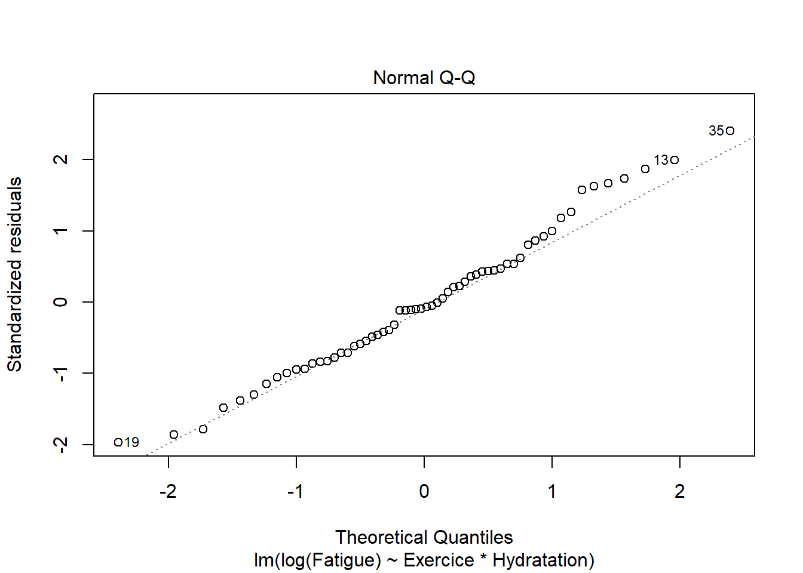
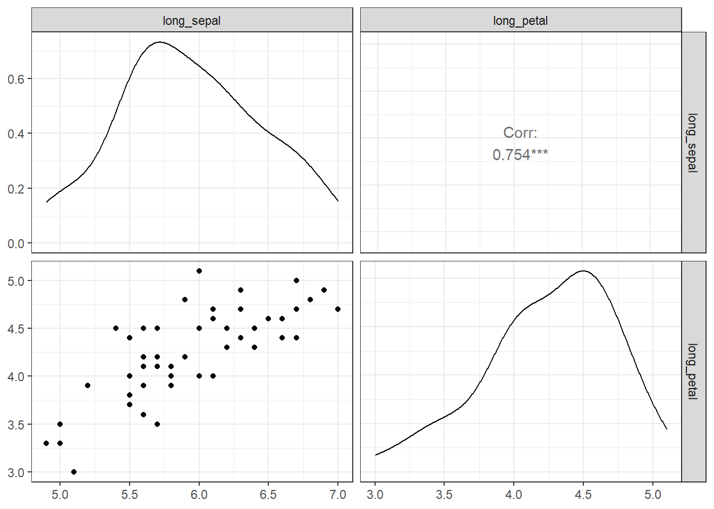
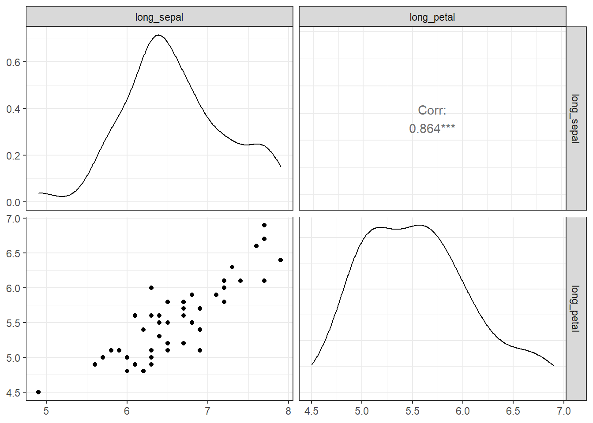

Chapitre 5 MANOVA à Un Facteur dans R
5.1 Introduction
L’Analyse Multivariée de la Variance (MANOVA pour Multivariate Analysis Of Variance en anglais) est une analyse de variance avec deux ou plusieurs variables-réponses continues.
Les test MANOVA à un facteur teste simultanément les différences statistiques pour plusieurs variables-réponses en fonction d’une seule variable de groupement.
Par exemple :
Nous pouvons mener une expérience où nous donnons deux traitements (A et B) à deux groupes de souris, et nous sommes intéressés par le poids et la taille des souris.
Dans ce cas, le poids et la taille des souris sont nos variables-réponses (ou dépendantes), et notre hypothèse est que les deux, ensemble, sont affectés par la différence de traitement.
Une analyse multivariée de la variance pourrait être utilisée pour vérifier cette hypothèse.
La procédure de MANOVA peut se résumer comme suit :
- Créer une nouvelle variable composite qui est une combinaison linéaire de toutes les variables-réponses.
- Comparer les valeurs moyennes de cette nouvelle variable entre les groupes.
Cet article décrit comment calculer le test MANOVA, à un facteur, dans R.
Notez que
MANOVA est approprié dans des situations expérimentales, où nous avons plusieurs variables-réponses (variables-dépendantes) qui mesurent tous différents aspects d’un thème cohésif. Par exemple, plusieurs notes d’examen pour avoir une mesure du niveau global de rendement scolaire.
5.2 Prérequis
Assurez-vous d’avoir installé les paquets R suivants :
tidyversepour la manipulation et la visualisation des donnéesggpubrpour créer facilement des graphiques prêts à la publicationrstatixpour des analyses statistiques facilescarpour les analyses MANOVAbroompour l’affichage d’un beau résumé des tests statistiques sous forme de dataframedatariumcontient les jeux de données requis pour ce chapitre
Commencez par charger les paquets R.
5.3 Préparation des données
Nous utiliserons le jeu de données intégré à R iris. Sélectionner les colonnes d’intérêt. Renommons les variables en français.
df <- iris %>%
select(Sepal.Length, Petal.Length, Species) %>%
add_column(id = 1:nrow(iris), .before = 1) %>%
rename(long_sepal = Sepal.Length,
long_petal = Petal.Length,
especes = Species)
head(df)## id long_sepal long_petal especes
## 1 1 5.1 1.4 setosa
## 2 2 4.9 1.4 setosa
## 3 3 4.7 1.3 setosa
## 4 4 4.6 1.5 setosa
## 5 5 5.0 1.4 setosa
## 6 6 5.4 1.7 setosa5.4 Visualisation
Le code R ci-dessous crée un boxplot fusionné de long_sepal et long_petal par groupes de especes.

5.5 Statistiques descriptives
Calculer des statistiques descriptives (moyenne, écart-type) par groupe pour chaque variable des résultats:
## # A tibble: 6 x 5
## especes variable n mean sd
## <fct> <chr> <dbl> <dbl> <dbl>
## 1 setosa long_petal 50 1.46 0.174
## 2 setosa long_sepal 50 5.01 0.352
## 3 versicolor long_petal 50 4.26 0.47
## 4 versicolor long_sepal 50 5.94 0.516
## 5 virginica long_petal 50 5.55 0.552
## 6 virginica long_sepal 50 6.59 0.6365.6 Hypothèses et tests préliminaires
Le test MANOVA formule les hypothèses suivantes au sujet des données :
Taille adéquate de l’échantillon. Règle empirique : la taille
ndans chaque cellule est supérieure au nombre de variables-réponses.Indépendance des observations. Chaque sujet ne doit appartenir qu’à un seul groupe. Il n’y a aucun lien entre les observations de chaque groupe. Il n’est pas permis d’avoir des mesures répétées pour les mêmes participants. La sélection des échantillons doit être complètement aléatoire.
Absence de valeurs aberrantes univariées ou multivariées.
Normalité à plusieurs variables. La fonction R
mshapiro_test( )[paquetrstatix] peut être utilisée pour effectuer le test de Shapiro-Wilk de normalité multivariée.Absence de multicollinéarité. Les variables dépendantes (variables-réponses) ne peuvent pas être trop corrélées les unes aux autres. Aucune corrélation ne doit être supérieure à r = 0,90 (Tabachnick and Fidell (2012)).
Linéarité entre toutes les variables-réponses pour chaque groupe.
Homogénéité des variances. Le test de Levene peut être utilisé pour tester l’égalité des variances entre les groupes. Les valeurs non significatives du test de Levene indiquent une variance égale entre les groupes.
Homogénéité des matrices de variance-covariance. Le Test M de Box permet de vérifier l’égalité de covariance entre les groupes. C’est l’équivalent d’une homogénéité multivariée de la variance. Ce test est considéré comme très sensible. Par conséquent, la significativité de ce test est déterminée à alpha = 0,001.
5.6.1 Vérifier l’hypothèse de taille des échantillons
## # A tibble: 3 x 2
## especes N
## <fct> <int>
## 1 setosa 50
## 2 versicolor 50
## 3 virginica 50Comme le tableau ci-dessus montre 50 observations par groupe, l’hypothèse de tailles d’échantillon adéquates est satisfaite.
5.6.2 Identifier les valeurs aberrantes univariées
Les valeurs aberrantes univariées peuvent être facilement identifiées à l’aide des méthodes de boxplots, implémentées dans la fonction R identify_outliers() [package rstatix].
Grouper les données par espèces et ensuite, identifier les valeurs aberrantes dans la variable long_sepal :
## # A tibble: 1 x 6
## especes id long_sepal long_petal is.outlier is.extreme
## <fct> <int> <dbl> <dbl> <lgl> <lgl>
## 1 virginica 107 4.9 4.5 TRUE FALSERegrouper les données par especes à nouveau et ensuite, identifier les valeurs aberrantes dans l’autre variable réponse long_petal :
## # A tibble: 5 x 6
## especes id long_sepal long_petal is.outlier is.extreme
## <fct> <int> <dbl> <dbl> <lgl> <lgl>
## 1 setosa 14 4.3 1.1 TRUE FALSE
## 2 setosa 23 4.6 1 TRUE FALSE
## 3 setosa 25 4.8 1.9 TRUE FALSE
## 4 setosa 45 5.1 1.9 TRUE FALSE
## 5 versicolor 99 5.1 3 TRUE FALSEIl n’y avait pas de valeurs extrêmes univariées dans les variables long_sepal et long_petal, telles qu’évaluées par les méthodes des boxplots.
Notez que
Dans le cas où vous avez des valeurs extrêmes aberrantes, cela peut être dû à des erreurs de saisie de données, ou des erreurs de mesure ou encore des valeurs inhabituelles.
Vous pouvez de toute façon inclure la valeur aberrante dans l’analyse si vous ne croyez pas que le résultat sera affecté de façon substantielle. Ceci peut être évalué en comparant le résultat du MANOVA avec et sans la valeur aberrante.
N’oubliez pas de rapporter dans votre section des résultats écrits toutes les décisions que vous prenez concernant les valeurs aberrantes que vous trouvez.
5.6.3 Détecter les valeurs aberrantes multivariées
Les valeurs aberrantes multivariées sont des points de données qui ont une combinaison inhabituelle de valeurs des variables-réponse (ou variables-dépendantes).
Dans le contexte MANOVA, la distance de Mahalanobis est généralement utilisée pour détecter les valeurs aberrantes multivariées. La distance nous indique la distance entre une observation et le centre du nuage, en tenant compte également de la forme (covariance) du nuage.
La fonction mahalanobis_distance() [package rstatix] peut être facilement utilisée pour calculer la distance de Mahalanobis et pour repèrer les outliers multivariées. Vous trouverez plus d’informations dans la documentation de la fonction.
Cette mesure doit être calculée par groupes : calculer la distance par groupes et filtrer les valeurs aberrantes. Utilisez -id pour omettre la colonne id dans le calcul. Retourner toujours un dataframe.
df %>%
group_by(especes) %>%
mahalanobis_distance(-id) %>%
filter(is.outlier == TRUE) %>%
as.data.frame()## [1] id long_sepal long_petal mahal.dist is.outlier
## <0 rows> (or 0-length row.names)Il n’y a pas de valeurs aberrantes multivariées dans les données, selon la distance de Mahalanobis (p > 0,001).
Si vous avez des valeurs aberrantes multivariées, vous pouvez envisager d’exécuter MANOVA avant et après avoir supprimé les valeurs aberrantes pour vérifier si leur présence modifie ou non les résultats. Vous devez faire part de votre décision finale.
5.6.4 Vérifier l’hypothèse de normalité univariée
L’hypothèse de normalité peut être vérifiée en calculant le test de Shapiro-Wilk pour chaque variable-réponse à chaque niveau de la variable de groupement. Si les données sont normalement distribuées, la p-value doit être supérieure à 0,05.
## # A tibble: 6 x 4
## especes variable statistic p
## <fct> <chr> <dbl> <dbl>
## 1 setosa long_petal 0.955 0.0548
## 2 versicolor long_petal 0.966 0.158
## 3 virginica long_petal 0.962 0.110
## 4 setosa long_sepal 0.978 0.460
## 5 versicolor long_sepal 0.978 0.465
## 6 virginica long_sepal 0.971 0.258La longueur des sépales et des pétales étaient normalement distribuées pour chaque groupe d’espèces, tel qu’évalué par le test de Shapiro-Wilk (p > 0,05).
Vous pouvez également créer un QQ plot pour chaque groupe. Le graphique QQ plot dessine la corrélation entre une donnée définie et la distribution normale.
QQ plot de la longueur des sépales
ggqqplot(df, "long_sepal", facet.by = "especes",
ylab = "Longueur des sépales", ggtheme = theme_bw())
QQ plot de la longueur des pétales
ggqqplot(df, "long_sepal", facet.by = "especes",
ylab = "Longueur des pétales", ggtheme = theme_bw())
Tous les points se situent approximativement le long de la ligne de référence, pour chaque groupe. Nous pouvons donc supposer la normalité des données.
Notez que
Si la taille de votre échantillon est supérieure à 50, le graphique de normalité QQ plot est préféré parce qu’avec des échantillons de plus grande taille, le test de Shapiro-Wilk devient très sensible même à un écart mineur par rapport à la normale.
Dans le cas où les hypothèses ne sont pas satisfaites, vous pouvez envisager d’exécuter MANOVA sur les données après avoir transformé les variables-réponses. Vous pouvez également effectuer le test quand même car MANOVA est assez robuste aux écarts de normalité.
5.6.5 Normalité à plusieurs variables
## # A tibble: 1 x 2
## statistic p.value
## <dbl> <dbl>
## 1 0.995 0.855Le test n’est pas significatif (p > 0,05), on peut donc supposer une normalité multivariée.
5.6.6 Identifier la multicollinéarité
Idéalement, la corrélation entre les variables-réponses devrait être modérée, pas trop élevée. Une corrélation supérieure à 0,9 est une indication de la multicollinéarité, ce qui est problématique pour MANOVA.
Par contre, si la corrélation est trop faible, vous devriez envisager d’exécuter une ANOVA à un facteur pour chaque variable-réponse.
Calculer des coefficients de corrélation de Pearson par paire entre les variables-réponses. Dans le code R suivant, nous utiliserons la fonction cor_test() [package rstatix]. Si vous avez plus de deux variables de résultats, envisagez d’utiliser la fonction cor_mat() :
## # A tibble: 1 x 8
## var1 var2 cor statistic p conf.low conf.high method
## <chr> <chr> <dbl> <dbl> <dbl> <dbl> <dbl> <chr>
## 1 long_sepal long_petal 0.87 21.6 1.04e-47 0.827 0.906 PearsonIl n’y a pas de multicollinéarité, selon la corrélation de Pearson (r = 0,87, p < 0,0001).
Dans le cas d’une multicollinéarité, vous pourriez envisager de supprimer l’une des variables-réponses qui est fortement corrélée.
5.6.7 Vérifier l’hypothèse de linéarité
La relation, par paire, entre les variables-réponse doit être linéaire pour chaque groupe. Ceci peut être vérifié visuellement en créant une matrice de nuage de points à l’aide de la fonction R ggpairs() [package GGally]. Dans notre exemple, nous n’avons qu’une seule paire :
Créer une matrice de nuage de points par groupe
results <- df %>%
select(long_sepal, long_petal, especes) %>%
group_by(especes) %>%
doo(~ggpairs(.) + theme_bw(), result = "plots")
results## # A tibble: 3 x 2
## especes plots
## <fct> <list>
## 1 setosa <gg>
## 2 versicolor <gg>
## 3 virginica <gg>Afficher les graphiques
## [[1]]
##
## [[2]]
##
## [[3]]
Il y a une relation linéaire entre la longueur des sépales et la longueur des pétales dans chaque groupe d’espèces, telle qu’évaluée par le nuage de points.
Dans le cas où vous détectez des relations non linéaires, vous pouvez :
- transformer ou supprimer les variables-réponses concernées ;
- exécuter l’analyse de toute façon. Vous perdrez un peu de puissance.
5.6.8 Vérifier l’hypothèse d’homogénéité des covariances
Ceci peut être évalué à l’aide du test M de Box implémenté dans le package rstatix.
## # A tibble: 1 x 4
## statistic p.value parameter method
## <dbl> <dbl> <dbl> <chr>
## 1 58.4 9.62e-11 6 Box's M-test for Homogeneity of Covariance Matri~Le test est statistiquement significatif (p < 0,001), donc les données ont violé l’hypothèse de l’homogénéité des matrices de variance-covariance.
Notez que
Si vous avez un plan d’échantillonnage équilibré (c.-à-d. des groupes de taille similaire), vous n’avez pas à vous soucier trop de la violation de l’homogénéité des matrices de variances-covariances et vous pouvez continuer votre analyse.
Cependant, un plan déséquilibré est problématique. Les solutions possibles sont les suivantes :
- transformer les variables dépendantes ;
- exécuter le test quand même, mais en utilisant la statistique multivariée de Pillai au lieu de la statistique de Wilks.
5.6.9 Vérifier l’hypothèse d’homogénéité de la variance
Pour chacune des variables-réponses, le test MANOVA suppose qu’il y a des variances égales entre les groupes. Ceci peut être vérifié à l’aide du test de Levene d’égalité des variances. Fonction R clé : levene_test() [paquet rstatix].
Procédure :
- Rassembler les variables-réponses en paires clé-valeur
- Grouper par variable
- Calculer le test de Levene
df %>%
gather(key = "variable", value = "value", long_sepal, long_petal) %>%
group_by(variable) %>%
levene_test(value ~ especes)## # A tibble: 2 x 5
## variable df1 df2 statistic p
## <chr> <int> <int> <dbl> <dbl>
## 1 long_petal 2 147 19.5 0.0000000313
## 2 long_sepal 2 147 6.35 0.00226Le test de Levene est significatif (p < 0,05), les variances ne sont donc pas homogènes.
Notez que
Si vous n’avez pas d’homogénéité des variances, vous pouvez essayer de transformer la variable-réponse (dépendante) pour corriger l’inégalité des variances.
Alternativement, vous pouvez continuer, mais accepter un niveau de significativité statistique inférieur (niveau alpha) pour votre résultat MANOVA. De plus, toute ANOVA univariée de suivi devra être corrigée pour cette violation (c.-à-d. que vous devrez utiliser différents tests post-hoc).
5.7 Calculs MANOVA
Il existe quatre types différents de statistiques multivariées qui peuvent être utilisées pour calculer MANOVA. Ce sont :
- Pillai,
- Wilks,
- Hotelling-Lawley,
- ou Roy.
La statistique multivariée la plus couramment recommandée est le Lambda de Wilks.
Cependant, le trace de Pillai est plus robuste et est recommandé lorsque vous avez un plan déséquilibré et un résultat du test M de Box qui est statistiquement significatif (comme dans notre exemple, voir section précédente).
Notez que Pillai est la valeur par défaut de la fonction R Manova() [package car].
Calculer MANOVA :
##
## Type II MANOVA Tests: Pillai test statistic
## Df test stat approx F num Df den Df Pr(>F)
## especes 2 0.9885 71.829 4 294 < 2.2e-16 ***
## ---
## Signif. codes: 0 '***' 0.001 '**' 0.01 '*' 0.05 '.' 0.1 ' ' 1Il y a une différence statistiquement significative entre les espèces sur les variables dépendantes combinées (long_sepal et long_petal), F(4, 294) = 71.829, p < 0.0001.
5.8 Tests post-hoc
Une MANOVA, à un facteur, statistiquement significative peut être suivie d’une ANOVA à un facteur en examinant, séparément, chaque variable dépendante. L’objectif est d’identifier les variables dépendantes spécifiques qui ont contribué à l’effet global significatif.
5.8.1 Calculer l’ANOVA à un facteur
Procédure :
- Rassembler les variables-réponses en paires clé-valeur (=> tableau format long)
- Grouper par variable
- Calculer le test ANOVA à un facteur
Notez qu’il existe différentes fonctions R pour calculer l’ANOVA à un facteur selon que les hypothèses sont remplies ou non :
anova_test()[rstatix] : peut être utilisé lorsque les hypothèses de normalité et d’homogénéité de la variance sont respectées.welch_anova_test()[rstatix] : peut être utilisé lorsque l’hypothèse d’homogénéité de variance est violée, comme dans notre exemple.kruskal_test()[rstatix] : Test de Kruskal-Wallis, une alternative non paramétrique au test ANOVA à un facteur
Les codes R suivants montrent comment utiliser chacune de ces fonctions :
Regrouper les données par variable
grouped.data <- df %>%
gather(key = "variable", value = "value", long_sepal, long_petal) %>%
group_by(variable)Test ANOVA de Welch à un facteur
## # A tibble: 2 x 8
## variable .y. n statistic DFn DFd p method
## * <chr> <chr> <int> <dbl> <dbl> <dbl> <dbl> <chr>
## 1 long_petal value 150 1828. 2 78.1 2.69e-66 Welch ANOVA
## 2 long_sepal value 150 139. 2 92.2 1.51e-28 Welch ANOVAou test Kruskal-Wallis
## # A tibble: 2 x 7
## variable .y. n statistic df p method
## * <chr> <chr> <int> <dbl> <int> <dbl> <chr>
## 1 long_petal value 150 130. 2 4.8 e-29 Kruskal-Wallis
## 2 long_sepal value 150 96.9 2 8.92e-22 Kruskal-Wallisou utiliser aov()
## Coefficient covariances computed by hccm()
## Coefficient covariances computed by hccm()## # A tibble: 2 x 8
## variable Effect DFn DFd F p `p<.05` ges
## * <chr> <chr> <dbl> <dbl> <dbl> <dbl> <chr> <dbl>
## 1 long_petal especes 2 147 1180. 2.86e-91 * 0.941
## 2 long_sepal especes 2 147 119. 1.67e-31 * 0.619Ici, nous montrons les résultats de anova_test() :
Il y avait une différence statistiquement significative dans la longueur des sépales (F(2, 147) = 119, p < 0,0001) et dans la longueur des pétales (F(2, 147) = 1180, p < 0,0001) entre les espèces d’iris.
Notez que
Comme nous avons deux variables dépendantes, nous devons appliquer la correction des tests multiples de Bonferroni en diminuant le niveau de la significativité statistique.
Pour ce faire, on divise le niveau alpha classique (0,05) par le nombre de tests (ou variables dépendantes, ici 2). Il en résulte un critère d’acceptation de la significativité de p < 0,025 plutôt que de p < 0,05 car il existe deux variables dépendantes.
5.8.2 Calculer plusieurs comparaisons par paires
Une ANOVA univariée statistiquement significative peut être suivie de multiples comparaisons par paires pour déterminer quels groupes sont différents.
La fonction R tukey_hsd() [package rstatix] peut être utilisée pour calculer les tests post-hoc de Tukey si l’hypothèse d’homogénéité de variance est satisfaite.
Si vous avez violé l’hypothèse d’homogénéité des variances, comme dans notre exemple, vous préféreriez peut-être effectuer un test post-hoc Games-Howell. Il est également possible d’utiliser la fonction pairwise_t_test() [rstatix] avec l’option pool.sd = FALSE et var.equal = FALSE.
pwc <- df %>%
gather(key = "variables", value = "value", long_sepal, long_petal) %>%
group_by(variables) %>%
games_howell_test(value ~ especes) %>%
select(-estimate, -conf.low, -conf.high) # Supprimer les détails
pwc## # A tibble: 6 x 6
## variables .y. group1 group2 p.adj p.adj.signif
## <chr> <chr> <chr> <chr> <dbl> <chr>
## 1 long_petal value setosa versicolor 1.85e-11 ****
## 2 long_petal value setosa virginica 1.68e-11 ****
## 3 long_petal value versicolor virginica 4.45e-10 ****
## 4 long_sepal value setosa versicolor 2.86e-10 ****
## 5 long_sepal value setosa virginica 0 ****
## 6 long_sepal value versicolor virginica 5.58e- 7 ****Toutes les comparaisons par paires sont significatives pour chacune des variables résultats (long_sepal et long_petal).
5.9 Rapporter
Une MANOVA à un facteur a été effectuée pour déterminer l’effet des espèces d’iris sur la longueur des sépales et des pétales. Il existe trois espèces différentes : setosa, versicolor et virginica.
Il y a une différence statistiquement significative entre les espèces sur les variables dépendantes combinées (long_sepal et long_petal), F(4, 294) = 71.829, p < 0.0001.
Les ANOVA univariées de suivi, utilisant un niveau alpha ajusté de Bonferroni de 0,025, ont montré qu’il y avait une différence statistiquement significative dans la longueur des sépales (F(2, 147) = 119, p < 0,0001 ) et la longueur des pétales (F(2, 147) = 1180, p < 0,0001) entre les espèces d’iris.
Toutes les comparaisons par paires entre les groupes sont significatives pour chacune des variables-réponses (long_sepal et long_petal).